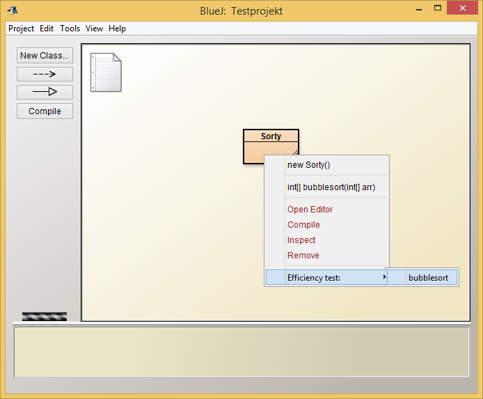

Effizienzmessungen können nur an Methoden vorgenommen werden, die
Um eine Effizienzmessung an einer ausgewählten Methode vorzunehmen, öffnen Sie das EfficiencyTestInputWindow:

Dort können Sie durch Drücken auf die Schaltfläche "+" eine Testinstanz erstellen, also ein einzelnes Tupel von Parametern für die zu testende Methode Tragen Sie ihre Werte in die entsprechenden Felder auf der Testinstanz ein. Hierbei ist zu beachten, dass Arrays sowohl mit als auch ohne eckige Klammern angegeben werden können. Elementare Datentypen und Strings können ebenso ohne besondere Vorkehrungen eingetragen werden.
Möchten Sie sich mehrere Instanzen generieren lassen, öffnet sich durch Drücken der Schaltfläche "Generator" ein neues Fenster. In diesem Fenster wählen Sie für jedes Attribut ihrer Methode ein Muster, welches die Werte enstprechend generiert: Elementare Datentypen und Strings können wie folgt generiert werden:
Haben Sie ihre Auswahl an Testfällen getroffen oder generieren lassen, haben Sie die Wahl, diese als ".vji" Datei zu exportieren um sie extern für einen späteren Versuch aufzubewahren. Besitzen Sie schon eine ".vji" Datei, welche Testfälle zu der aktuellen Methode enthält, können Sie die Daten bequem über den Button "Importieren" zu Ihren Testfällen hinzufügen.
Nun ist es Zeit, ihren Algorithmus zu testen. Durch Betätigung des "Start" Buttons werden die einzelnen Testfälle geprüft. Die Genauigkeit gibt die Anzahl der Testdurchläufe pro Testfall an.
Wurden alle Tests erfolgreich beendet, öffnet sich ein neues Fenster, in dem Sie die Ergebnisse der Messung in unterschiedlichen Formen auslesen und interpretieren können.